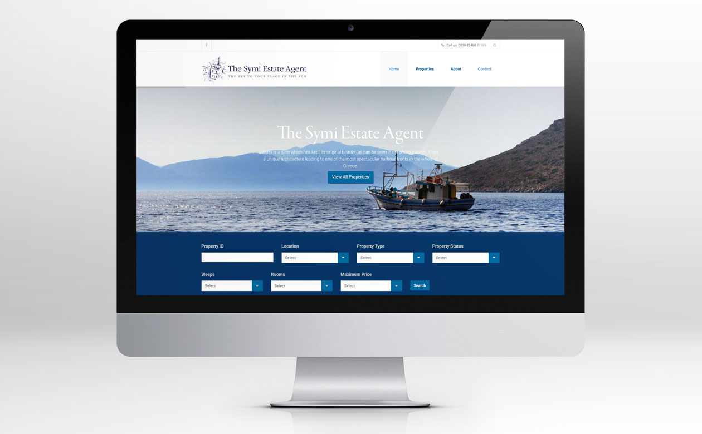

Our new website is a step up from our old site and is really easy to use…
As the primary property agents on the island, the Symi Estate Agency wanted a website that could not only feature its attractive range of properties but could also reflect the idyllic charm of the island’s South Aegean location.
SLJ Media’s response to the brief was to blend stunning photography with a functional, multi-language and fully responsive web platform that could be easily be updated by the client as and when required.
Our new website is a step up from our old site and is really easy to use…